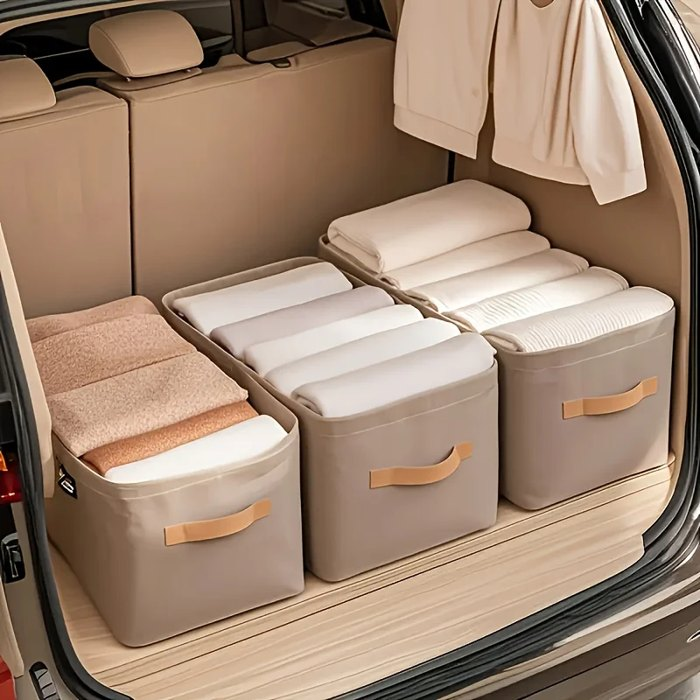

NICHT FREIGEGEBENER PRODUKTENTWURF
Keine eBay-Veröffentlichung. Fehlende Dokumente und Prüfpunkte bleiben offen. Versand und Gewinn sind nur Kalkulationswerte, keine Checkout-/Gewinnbestätigung.
AliExpress: 1005012032555747

Spezifikationen: Material: Vliesstoffe Farbe: grau, Khaki Größe: wie abgebildet Eigenschaften: • Staubdichtes Material: Diese Aufbewahrungstasche besteht aus Vliesstoff und ist staubdicht, sodass Ihre Kleidung und Steppdecken sauber und staubfrei bleiben. • Platzsparendes Design: Diese faltbare Aufbewahrungstasche ist platzsparend konzipiert und eignet sich daher perfekt für kleine Schlafzimmer oder auf Reisen. • Leicht zu tragen: Mit einem Griff ist diese Aufbewahrungstasche leicht zu tragen und kann bei Nichtgebrauch problemlos verstaut werden. • Vielseitig einsetzbar: Diese Aufbewahrungstasche kann für verschiedene Zwecke verwendet werden, darunter zum Aufbewahren von Kleidung, Steppdecken und anderen Bettwäschestücken. • Praktischer Griff: Der Griff dieser Aufbewahrungstasche erleichtert das Tragen und Bewegen und eignet sich daher perfekt für die Organisation Ihrer Kleidung und Bettwäsche. Lieferumfang: 1 * Aufbewahrungstasche Hinweis: 1.Bitte erlauben Sie 1-3 cm Abweichungen aufgrund der manuellen Messung. 2. Aufgrund unterschiedlicher Bildschirmeinstellungen und Lichtverhältnisse kann das Bild die tatsächliche Farbe des Artikels nicht exakt wiedergeben. Vielen Dank für Ihr Verständnis.
| Material | Vliesstoff |
|---|---|
| Ursprung | CN (Herkunft) |
| Choice | yes |
| SKU | Quelloptionen | Bestand | Quellpreis EUR | Versandprognose EUR | Verkaufspreisprognose EUR |
|---|---|---|---|---|---|
| 12000057334381652 | {"Farbe": "Grau XL"} | 8 | 7.99 | 1.99 | 29.99 |
| 12000057334381653 | {"Farbe": "Grau M"} | 0 | 6.19 | nicht verifiziert | nicht berechnet |
| 12000057334381654 | {"Farbe": "Khaki XL"} | 8 | 7.39 | 1.99 | 28.99 |
| 12000057334381655 | {"Farbe": "Khaki M"} | 8 | 6.09 | 1.99 | 27.99 |
Breite, Höhe, Länge, Produktart